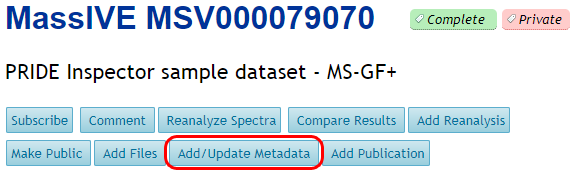
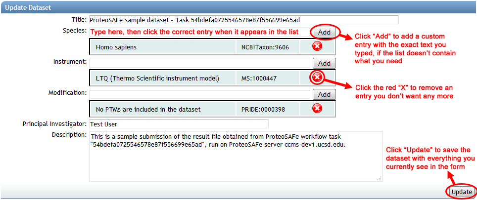

Add/Update Metadata
To change the set of metadata tags associated with a dataset, click on the “Add/Update Metadata” link near the top of the dataset page.

This will open a form to add new tags, remove existing ones, or modify any text metadata such as the dataset’s description. The controls for adjusting these fields are exactly the same as those in the dataset input form described above.
